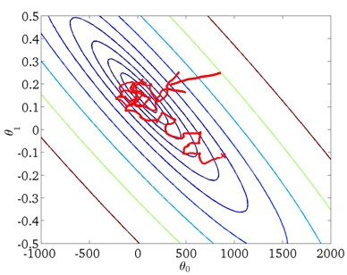
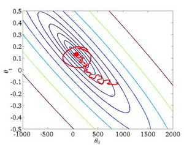
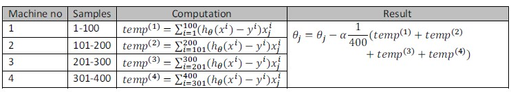
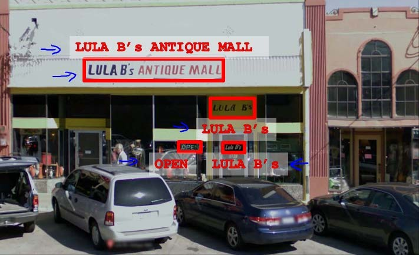
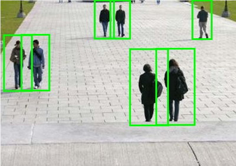
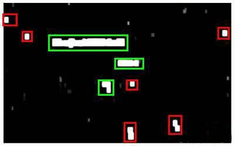
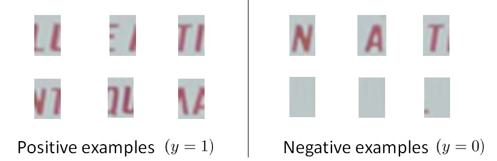
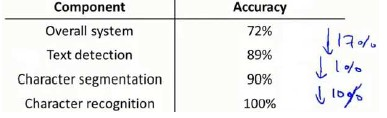

第10周
第10周十七、大规模机器学习(Large Scale Machine Learning)17.1 大型数据集的学习17.2 随机梯度下降法17.3 小批量梯度下降17.4 随机梯度下降收敛17.5 在线学习17.6 映射化简和数据并行十八、应用实例：图片文字识别(Application Example: Photo OCR)18.1 问题描述和流程图18.2 滑动窗口18.3 获取大量数据和人工数据18.4 上限分析：哪部分管道的接下去做十九、总结(Conclusion)19.1 总结和致谢
十七、大规模机器学习(Large Scale Machine Learning)
17.1 大型数据集的学习
参考视频: 17 - 1 - Learning With Large Datasets (6 min).mkv
如果我们有一个低方差的模型，增加数据集的规模可以帮助你获得更好的结果。我们应该怎样应对一个有100万条记录的训练集？
以线性回归模型为例，每一次梯度下降迭代，我们都需要计算训练集的误差的平方和，如果我们的学习算法需要有20次迭代，这便已经是非常大的计算代价。
首先应该做的事是去检查一个这么大规模的训练集是否真的必要，也许我们只用1000个训练集也能获得较好的效果，我们可以绘制学习曲线来帮助判断。

17.2 随机梯度下降法
参考视频: 17 - 2 - Stochastic Gradient Descent (13 min).mkv
如果我们一定需要一个大规模的训练集，我们可以尝试使用随机梯度下降法来代替批量梯度下降法。
在随机梯度下降法中，我们定义代价函数为一个单一训练实例的代价：
随机梯度下降算法为：首先对训练集随机“洗牌”，然后： Repeat (usually anywhere between1-10){
for {
(for )
} }
随机梯度下降算法在每一次计算之后便更新参数 ，而不需要首先将所有的训练集求和，在梯度下降算法还没有完成一次迭代时，随机梯度下降算法便已经走出了很远。但是这样的算法存在的问题是，不是每一步都是朝着”正确”的方向迈出的。因此算法虽然会逐渐走向全局最小值的位置，但是可能无法站到那个最小值的那一点，而是在最小值点附近徘徊。

17.3 小批量梯度下降
参考视频: 17 - 3 - Mini-Batch Gradient Descent (6 min).mkv
小批量梯度下降算法是介于批量梯度下降算法和随机梯度下降算法之间的算法，每计算常数次训练实例，便更新一次参数 。 Repeat {
for {
(for )
} }
通常我们会令 在 2-100 之间。这样做的好处在于，我们可以用向量化的方式来循环 个训练实例，如果我们用的线性代数函数库比较好，能够支持平行处理，那么算法的总体表现将不受影响（与随机梯度下降相同）。
17.4 随机梯度下降收敛
参考视频: 17 - 4 - Stochastic Gradient Descent Convergence (12 min). mkv
现在我们介绍随机梯度下降算法的调试，以及学习率 的选取。
在批量梯度下降中，我们可以令代价函数为迭代次数的函数，绘制图表，根据图表来判断梯度下降是否收敛。但是，在大规模的训练集的情况下，这是不现实的，因为计算代价太大了。
在随机梯度下降中，我们在每一次更新 之前都计算一次代价，然后每次迭代后，求出这次对训练实例计算代价的平均值，然后绘制这些平均值与次迭代的次数之间的函数图表。

当我们绘制这样的图表时，可能会得到一个颠簸不平但是不会明显减少的函数图像（如上面左下图中蓝线所示）。我们可以增加来使得函数更加平缓，也许便能看出下降的趋势了（如上面左下图中红线所示）；或者可能函数图表仍然是颠簸不平且不下降的（如洋红色线所示），那么我们的模型本身可能存在一些错误。
如果我们得到的曲线如上面右下方所示，不断地上升，那么我们可能会需要选择一个较小的学习率。
我们也可以令学习率随着迭代次数的增加而减小，例如令：
随着我们不断地靠近全局最小值，通过减小学习率，我们迫使算法收敛而非在最小值附近徘徊。 但是通常我们不需要这样做便能有非常好的效果了，对进行调整所耗费的计算通常不值得

总结下，这段视频中，我们介绍了一种方法，近似地监测出随机梯度下降算法在最优化代价函数中的表现，这种方法不需要定时地扫描整个训练集，来算出整个样本集的代价函数，而是只需要每次对最后1000个，或者多少个样本，求一下平均值。应用这种方法，你既可以保证随机梯度下降法正在正常运转和收敛，也可以用它来调整学习速率的大小。
17.5 在线学习
参考视频: 17 - 5 - Online Learning (13 min).mkv
在这个视频中，讨论一种新的大规模的机器学习机制，叫做在线学习机制。在线学习机制让我们可以模型化问题。
今天，许多大型网站或者许多大型网络公司，使用不同版本的在线学习机制算法，从大批的涌入又离开网站的用户身上进行学习。特别要提及的是，如果你有一个由连续的用户流引发的连续的数据流，进入你的网站，你能做的是使用一个在线学习机制，从数据流中学习用户的偏好，然后使用这些信息来优化一些关于网站的决策。
假定你有一个提供运输服务的公司，用户们来向你询问把包裹从A地运到B地的服务，同时假定你有一个网站，让用户们可多次登陆，然后他们告诉你，他们想从哪里寄出包裹，以及包裹要寄到哪里去，也就是出发地与目的地，然后你的网站开出运输包裹的的服务价格。比如，我会收取$50来运输你的包裹，我会收取$20之类的，然后根据你开给用户的这个价格，用户有时会接受这个运输服务，那么这就是个正样本，有时他们会走掉，然后他们拒绝购买你的运输服务，所以，让我们假定我们想要一个学习算法来帮助我们，优化我们想给用户开出的价格。
一个算法来从中学习的时候来模型化问题在线学习算法指的是对数据流而非离线的静态数据集的学习。许多在线网站都有持续不断的用户流，对于每一个用户，网站希望能在不将数据存储到数据库中便顺利地进行算法学习。
假使我们正在经营一家物流公司，每当一个用户询问从地点A至地点B的快递费用时，我们给用户一个报价，该用户可能选择接受（）或不接受（）。
现在，我们希望构建一个模型，来预测用户接受报价使用我们的物流服务的可能性。因此报价 是我们的一个特征，其他特征为距离，起始地点，目标地点以及特定的用户数据。模型的输出是:。
在线学习的算法与随机梯度下降算法有些类似，我们对单一的实例进行学习，而非对一个提前定义的训练集进行循环。 Repeat forever (as long as the website is running) { Get corresponding to the current user (for ) }
一旦对一个数据的学习完成了，我们便可以丢弃该数据，不需要再存储它了。这种方式的好处在于，我们的算法可以很好的适应用户的倾向性，算法可以针对用户的当前行为不断地更新模型以适应该用户。
每次交互事件并不只产生一个数据集，例如，我们一次给用户提供3个物流选项，用户选择2项，我们实际上可以获得3个新的训练实例，因而我们的算法可以一次从3个实例中学习并更新模型。
这些问题中的任何一个都可以被归类到标准的，拥有一个固定的样本集的机器学习问题中。或许，你可以运行一个你自己的网站，尝试运行几天，然后保存一个数据集，一个固定的数据集，然后对其运行一个学习算法。但是这些是实际的问题，在这些问题里，你会看到大公司会获取如此多的数据，真的没有必要来保存一个固定的数据集，取而代之的是你可以使用一个在线学习算法来连续的学习，从这些用户不断产生的数据中来学习。这就是在线学习机制，然后就像我们所看到的，我们所使用的这个算法与随机梯度下降算法非常类似，唯一的区别的是，我们不会使用一个固定的数据集，我们会做的是获取一个用户样本，从那个样本中学习，然后丢弃那个样本并继续下去，而且如果你对某一种应用有一个连续的数据流，这样的算法可能会非常值得考虑。当然，在线学习的一个优点就是，如果你有一个变化的用户群，又或者你在尝试预测的事情，在缓慢变化，就像你的用户的品味在缓慢变化，这个在线学习算法，可以慢慢地调试你所学习到的假设，将其调节更新到最新的用户行为。
17.6 映射化简和数据并行
参考视频: 17 - 6 - Map Reduce and Data Parallelism (14 min).mkv
映射化简和数据并行对于大规模机器学习问题而言是非常重要的概念。之前提到，如果我们用批量梯度下降算法来求解大规模数据集的最优解，我们需要对整个训练集进行循环，计算偏导数和代价，再求和，计算代价非常大。如果我们能够将我们的数据集分配给不多台计算机，让每一台计算机处理数据集的一个子集，然后我们将计所的结果汇总在求和。这样的方法叫做映射简化。
具体而言，如果任何学习算法能够表达为，对训练集的函数的求和，那么便能将这个任务分配给多台计算机（或者同一台计算机的不同CPU 核心），以达到加速处理的目的。
例如，我们有400个训练实例，我们可以将批量梯度下降的求和任务分配给4台计算机进行处理：

很多高级的线性代数函数库已经能够利用多核CPU的多个核心来并行地处理矩阵运算，这也是算法的向量化实现如此重要的缘故（比调用循环快）。
十八、应用实例：图片文字识别(Application Example: Photo OCR)
18.1 问题描述和流程图
参考视频: 18 - 1 - Problem Description and Pipeline (7 min).mkv
图像文字识别应用所作的事是，从一张给定的图片中识别文字。这比从一份扫描文档中识别文字要复杂的多。

为了完成这样的工作，需要采取如下步骤：
- 文字侦测（Text detection）——将图片上的文字与其他环境对象分离开来
- 字符切分（Character segmentation）——将文字分割成一个个单一的字符
- 字符分类（Character classification）——确定每一个字符是什么 可以用任务流程图来表达这个问题，每一项任务可以由一个单独的小队来负责解决：
18.2 滑动窗口
参考视频: 18 - 2 - Sliding Windows (15 min).mkv
滑动窗口是一项用来从图像中抽取对象的技术。假使我们需要在一张图片中识别行人，首先要做的是用许多固定尺寸的图片来训练一个能够准确识别行人的模型。然后我们用之前训练识别行人的模型时所采用的图片尺寸在我们要进行行人识别的图片上进行剪裁，然后将剪裁得到的切片交给模型，让模型判断是否为行人，然后在图片上滑动剪裁区域重新进行剪裁，将新剪裁的切片也交给模型进行判断，如此循环直至将图片全部检测完。
一旦完成后，我们按比例放大剪裁的区域，再以新的尺寸对图片进行剪裁，将新剪裁的切片按比例缩小至模型所采纳的尺寸，交给模型进行判断，如此循环。

滑动窗口技术也被用于文字识别，首先训练模型能够区分字符与非字符，然后，运用滑动窗口技术识别字符，一旦完成了字符的识别，我们将识别得出的区域进行一些扩展，然后将重叠的区域进行合并。接着我们以宽高比作为过滤条件，过滤掉高度比宽度更大的区域（认为单词的长度通常比高度要大）。下图中绿色的区域是经过这些步骤后被认为是文字的区域，而红色的区域是被忽略的。

以上便是文字侦测阶段。 下一步是训练一个模型来完成将文字分割成一个个字符的任务，需要的训练集由单个字符的图片和两个相连字符之间的图片来训练模型。

模型训练完后，我们仍然是使用滑动窗口技术来进行字符识别。
以上便是字符切分阶段。 最后一个阶段是字符分类阶段，利用神经网络、支持向量机或者逻辑回归算法训练一个分类器即可。
18.3 获取大量数据和人工数据
参考视频: 18 - 3 - Getting Lots of Data and Artificial Data (16 min).mkv
如果我们的模型是低方差的，那么获得更多的数据用于训练模型，是能够有更好的效果的。问题在于，我们怎样获得数据，数据不总是可以直接获得的，我们有可能需要人工地创造一些数据。
以我们的文字识别应用为例，我们可以字体网站下载各种字体，然后利用这些不同的字体配上各种不同的随机背景图片创造出一些用于训练的实例，这让我们能够获得一个无限大的训练集。这是从零开始创造实例。
另一种方法是，利用已有的数据，然后对其进行修改，例如将已有的字符图片进行一些扭曲、旋转、模糊处理。只要我们认为实际数据有可能和经过这样处理后的数据类似，我们便可以用这样的方法来创造大量的数据。
有关获得更多数据的几种方法：
- 人工数据合成
- 手动收集、标记数据
- 众包
18.4 上限分析：哪部分管道的接下去做
参考视频: 18 - 4 - Ceiling Analysis_ What Part of the Pipeline to Work on Next (14 min).mkv
在机器学习的应用中，我们通常需要通过几个步骤才能进行最终的预测，我们如何能够知道哪一部分最值得我们花时间和精力去改善呢？这个问题可以通过上限分析来回答。
回到我们的文字识别应用中，我们的流程图如下：
流程图中每一部分的输出都是下一部分的输入，上限分析中，我们选取一部分，手工提供100%正确的输出结果，然后看应用的整体效果提升了多少。假使我们的例子中总体效果为72%的正确率。
如果我们令文字侦测部分输出的结果100%正确，发现系统的总体效果从72%提高到了89%。这意味着我们很可能会希望投入时间精力来提高我们的文字侦测部分。
接着我们手动选择数据，让字符切分输出的结果100%正确，发现系统的总体效果只提升了1%，这意味着，我们的字符切分部分可能已经足够好了。
最后我们手工选择数据，让字符分类输出的结果100%正确，系统的总体效果又提升了10%，这意味着我们可能也会应该投入更多的时间和精力来提高应用的总体表现。

十九、总结(Conclusion)
19.1 总结和致谢
参考视频: 19 - 1 - Summary and Thank You (5 min).mkv
欢迎来到《机器学习》课的最后一段视频。我们已经一起学习很长一段时间了。在最后这段视频中，我想快速地回顾一下这门课的主要内容，然后简单说几句想说的话。
作为这门课的结束时间，那么我们学到了些什么呢？在这门课中，我们花了大量的时间介绍了诸如线性回归、逻辑回归、神经网络、支持向量机等等一些监督学习算法，这类算法具有带标签的数据和样本，比如、。
然后我们也花了很多时间介绍无监督学习。例如 K-均值聚类、用于降维的主成分分析，以及当你只有一系列无标签数据 时的异常检测算法。
当然，有时带标签的数据，也可以用于异常检测算法的评估。此外，我们也花时间讨论了一些特别的应用或者特别的话题，比如说推荐系统。以及大规模机器学习系统，包括并行系统和映射化简方法，还有其他一些特别的应用。比如，用于计算机视觉技术的滑动窗口分类算法。
最后，我们还提到了很多关于构建机器学习系统的实用建议。这包括了怎样理解某个机器学习算法是否正常工作的原因，所以我们谈到了偏差和方差的问题，也谈到了解决方差问题的正则化，同时我们也讨论了怎样决定接下来怎么做的问题，也就是说当你在开发一个机器学习系统时，什么工作才是接下来应该优先考虑的问题。因此我们讨论了学习算法的评价法。介绍了评价矩阵，比如：查准率、召回率以及F1分数，还有评价学习算法比较实用的训练集、交叉验证集和测试集。我们也介绍了学习算法的调试，以及如何确保学习算法的正常运行，于是我们介绍了一些诊断法，比如学习曲线，同时也讨论了误差分析、上限分析等等内容。
所有这些工具都能有效地指引你决定接下来应该怎样做，让你把宝贵的时间用在刀刃上。现在你已经掌握了很多机器学习的工具，包括监督学习算法和无监督学习算法等等。
但除了这些以外，我更希望你现在不仅仅只是认识这些工具，更重要的是掌握怎样有效地利用这些工具来建立强大的机器学习系统。所以，以上就是这门课的全部内容。如果你跟着我们的课程一路走来，到现在，你应该已经感觉到自己已经成为机器学习方面的专家了吧？
我们都知道，机器学习是一门对科技、工业产生深远影响的重要学科，而现在，你已经完全具备了应用这些机器学习工具来创造伟大成就的能力。我希望你们中的很多人都能在相应的领域，应用所学的机器学习工具，构建出完美的机器学习系统，开发出无与伦比的产品和应用。并且我也希望你们通过应用机器学习，不仅仅改变自己的生活，有朝一日，还要让更多的人生活得更加美好！
我也想告诉大家，教这门课对我来讲是一种享受。所以，谢谢大家！
最后，在结束之前，我还想再多说一点：那就是，也许不久以前我也是一个学生，即使是现在，我也尽可能挤出时间听一些课，学一些新的东西。所以，我深知要坚持学完这门课是很需要花一些时间的，我知道，也许你是一个很忙的人，生活中有很多很多事情要处理。正因如此，你依然挤出时间来观看这些课程视频。我知道，很多视频的时间都长达数小时，你依然花了好多时间来做这些复习题。你们中好多人，还愿意花时间来研究那些编程练习，那些又长又复杂的编程练习。我对你们表示衷心的感谢！我知道你们很多人在这门课中都非常努力，很多人都在这门课上花了很多时间，很多人都为这门课贡献了自己的很多精力。所以，我衷心地希望你们能从这门课中有所收获！
最后我想说！再次感谢你们选修这门课程！
Andew Ng